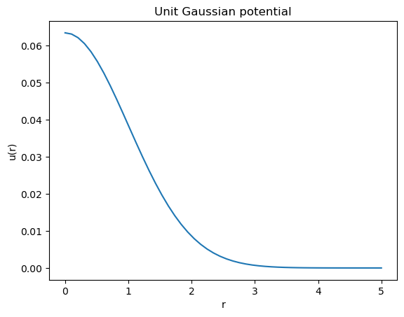
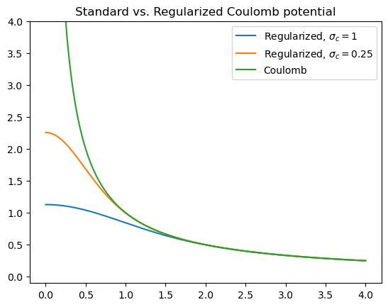
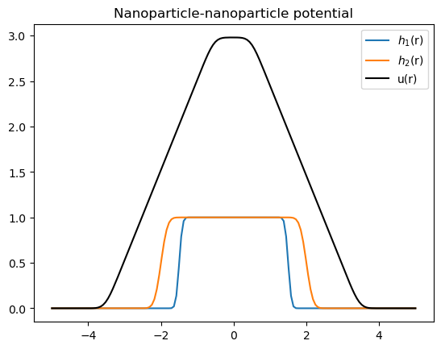
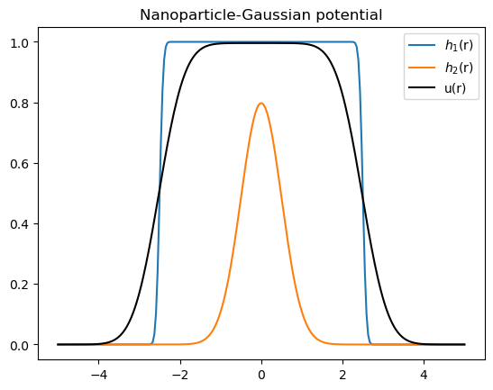

PS Potentials#
Overall notes about potentials#
Pair potentials#
If potentials act between the same group (e.g., through a Helfand potential where \(U = \frac{\kappa}{2\rho_0} \int d{\mathbf r} \int d\mathbf{r}' \, \rho_+(\mathbf{r}) \, u_G(\mathbf{r}-\mathbf{r}') \, \rho_+(\mathbf{r}')\)) with \(u_G\) a unit Gaussian, then the force is accumulated twice in the ps_potentials.cu calcForces() routine. If such a ‘self’-interacting potential is used, take care when defining the prefactor such that it includes the factor of 1/2.
Smearing and pair potentials#
While full details can be found in the literature (Koski et al. J. Chem. Phys. 2013; Villet et al., J. Chem. Phys. 2014), some of the ‘unusual’ pair potentials included herein derive from the smearing functions used in field-theoretic simulations (FTS), a brief explainer is provided here. The microscopic density can be written as \(\hat \rho_I(\mathbf r) = \sum_i \delta(\mathbf r - \mathbf r_i)\), where the particle centers are marked using Dirac delta functions. If the ‘mass’ of the particle is instead spread out over a finite range described by the function \(h_I(\mathbf r)\), then the ‘smeared’ particle density can be written as
\(
\breve \rho_I(\mathbf r) = \sum_i h_I(\mathbf r - \mathbf r_i) = \int d\mathbf r' \; h_I(\mathbf r - \mathbf r') \, \hat \rho(\mathbf r') = [h_I \ast \hat\rho_I](\mathbf r)
\)
where the last equality introduces our short-hand notation for a convolution integral.
Many field-theoretic simulations use purely local, Delta function interaction potentials of the form \(u(r) = A \, \delta(r)\), where \(A\) is the amplitude of the potential. For a model that uses such a potential but smeared particle densities, the potential energy would be
\(
\begin{alignat}{1}
\beta U &= A \int d\mathbf r \int d\mathbf r'\; \breve\rho(\mathbf r) \, \delta(|\mathbf r - \mathbf r'|) \, \breve\rho(\mathbf r')
\\
&= \int d\mathbf r \int d\mathbf r'\; \hat \rho(\mathbf r) \, u_{IJ}(|\mathbf r - \mathbf r'|) \, \hat \rho(\mathbf r')
\end{alignat}
\)
where in the second line we have restored the delta function densities \(\hat \rho_I, \hat \rho_J\) but now have a non-local pair potential \(u_{IJ}(r) = A [h_I \ast h_J](r)\).
To preserve the equivalence between FTS and particle simulations (PS), we often use pair potentials derived from the smearing functions commonly used in FTS. For the ubiquitous Gaussian-smearing function, one finds \(u_{IJ}(r) = A\, \left( \frac{1}{2\pi \sigma^2} \right)^{3/2} e^{-r^2/2(\sigma_I^2 + \sigma_J^2)}\).
The two other primary potentials we have implemented derive from our work with field-theoretic simulations of polymer nanocomposites where the nanoparticles are smeared with a error function as \(h_{N}(\mathbf r) = \frac{\rho_0}{2} \textrm{erfc}\left( \frac{|\mathbf r| - R_P}{\xi}\right)\), where \(\rho_0\) is the bulk density in the center of the nanoparticle, \(R_P\) is the nanoparticle radius, and \(\xi\) is the breadth of the particle interface where the density of the particle transitions from \(\rho_0\) to 0. The erf2 potential described below represents the convolution of two nanoparticle smearing functions with potentially two distinct particle sizes \(R_P\) and interfacial widths \(\xi\), which is meant to regularize but still capture excluded volume interactions between the particles. Similarly, the erfG potential is the convolution of a nanoparticle \(h(r)\) with a Gaussian and is used to capture interactions between NPs and polymer monomers.
Gaussian potential#
potential gaussian [group I] [group J] [prefactor float] [std deviation float]
Imposes a Gaussian non-bonded potential between groups I and J of the form
\( U_{nb} = \int d\mathbf{r} \int d\mathbf{r}' \, \rho_I(\mathbf{r}) \, u_G(|\mathbf{r} - \mathbf{r}'|) \, \rho_J(\mathbf{r}')\)
with Gaussian potential \(u_G(r) = A \left( \frac{1}{2\pi \sigma^2} \right)^{\mathbb{D}/2} e^{-r^2/2\sigma^2}\). The prefactor is the value of \(A\), and the standard deviation \(\sigma\) controls the range of the potential. This potential has become a common way to ‘smear’ the delta functions that are commonly used in SCFT calculations to regularize the models, and the non-local potential gives rise to (weak) liquid-like correlations in the fluid.
import numpy as np
import matplotlib.pyplot as plt
from scipy.special import erf
r = np.linspace(0, 5.0)
u = (2.0*3.14159*1.0)**-1.5 * np.exp(-r**2 / 2)
plt.figure(1)
plt.plot(r,u)
plt.title('Unit Gaussian potential')
plt.ylabel('u(r)')
plt.xlabel('r')
plt.show()

Charges and electrostatics#
potential charges [Bjerrum float] [sigmaq float]
Enables calculation of electrostatic interactions using floats \(l_B\), the Bjerrum length, and \(\sigma_q\) the charge smearing length.
Charge interactions assume the charges are distributed over a unit Gaussian centered at the particle middle, so that the charge density is taken as \(\breve \rho_c(\mathbf r) = \sum_i q_i \, h_G(\mathbf r - \mathbf r_i)\), with \(h_G(\mathbf r)\) a unit Gaussian in the appropriate number of dimensions with standard deviation \(\sigma_q\). The electrostatic interaction potential and forces are then computed by solving Poisson’s equation,
$\(
\nabla^2 \phi = -4\pi l_B \breve\rho_c,
\)\(
which is readily solved using Fourier transforms. Here, \)\phi(\mathbf r)\( is the electrostatic potential, \)\mathbf{E} = -\nabla \phi\( is the electric field, and \)l_B\( is the Bjerrum length. The electrostatic energy is then computed as
\)\(
U_{q} = \frac 1 2 \int d\mathbf {r} \; \breve \rho(\mathbf r) \, \phi(\mathbf r).
\)$
Note that the above implementation is exactly the same as the k-space part of the common Ewald summation used in particle simulations. The effective pair potential is regularized as \(r\rightarrow 0^+\) and is compared to the standard Coulomb potential in the figure below.
r = np.linspace(0.00001,4, 150)
sig1 = 1.0
sig2 = 0.5
plt.figure(4)
plt.plot(r, erf(r/sig1)/r, label='Regularized, $\sigma_c = 1$')
plt.plot(r, erf(r/sig2)/r, label='Regularized, $\sigma_c=0.25$')
plt.plot(r,1/r, label='Coulomb')
plt.ylim([-0.1,4])
plt.title('Standard vs. Regularized Coulomb potential')
plt.legend()
plt.show()

Implementation notes#
The Poisson equation is solved in Fourier space, where the convolution of the point charge density with \(h_G(\mathbf r)\) becomes a product, \(\phi_k = \frac{4 \pi l_B}{k^2} \rho_c(k) \, h_G(k)\) for \(|k| \neq 0\) and with \(\rho_c(k)\) the Fourier transform of the point charge density. Since evaluating \(U_q\) requires multiplying again by \(\breve \rho_c(k)\), the smeared charge density, \(U_q\) is precomputed with \(h_G(k)^2\). Similar rationale applies for mapping the force back to the particles, $\( \mathbf f_i = \int d\mathbf r \; h_G(\mathbf r- \mathbf r_i) \, \mathbf E(\mathbf r), \)\( so this step of Gaussian smearing is also contained in the precomputed factor of \)h_G(k)^2$.
The pre-computed k-space terms are invariant during the simulations that do not change (assuming constant box dimensions), and they are computed during initialization as $\( \psi(k) = \frac{4\pi l_B}{k^2} \, h_G(k)^2 \;\;\; \forall \; |k| \neq 0, \)\( and \)\( -\mathbf \nabla \psi(r) = \mathcal{F}^{-1}[-i \mathbf k \psi(k)]. \)$
If \(\hat \rho_c(k)\) is the Fourier transform of the point particle density, then the operations to compute the energy are to compute $\( g(k) &= \psi(k) \, \hat\rho_c(k), \)\( \)\( g(\mathbf r) = \mathcal{F}^{-1}[g(k)], \)\( and \)\( U_{q} = \frac{1}{2} \int d\mathbf r \; g(\mathbf r) \, \hat \rho_c(\mathbf r). \)\( Similarly, the force on particle *i* is given by \)\( \mathbf f_i(\mathbf r) = q_i \int d\mathbf r \, \left[ -\mathbf \nabla g(\mathbf r) \right] \delta (\mathbf r - \mathbf r_i) . \)\( Note \)\psi(r) \neq \phi(r)\( due to the extra convolution with \)h_G(r)\( (similar for the electric field, \)\mathbf E(r)$).
These initialization steps are taken in ps_potentialCharges.cu in the function NBCharge::initializePotential().
Notes#
The old version 1 of the code base did not have the extra convolution included, so the new code must be run with \(\sigma_{c,new} = \sigma_{c,old}/\sqrt{2}\) to obtain matching energies.
Maier-Saupe potential (in progress)#
potential maier [group I] [group I] [prefactor float] [sigma float] [lc input filename]
Imposes a Maier-Saupe orientation potential between particles in group I. The potential is non-local using a unit Gaussian and with amplitude prefactor and standard deviation sigma.
The total potential energy is given by the form adopted from Pryamitsyn and Ganesan
Note the prefactor is negative, so the typical use case will provide a positive prefactor (\(A_0 > 0\)) to promote alignment of the molecules in group \(I\).
The tensor field \(\mathbf{S}(\mathbf{r})\) is constructed from the particle positions as
\(\mathbf{S}(\mathbf{r}) = \sum_{i \in I} \mathbf{S}_i \, \delta(\mathbf{r} - \mathbf{r}_i)\)
where \(\mathbf{S}_i = (\mathbf{u}_i \mathbf u_i - \frac{\mathcal{I}}{\mathbb{D}})\) is a rank 2 tensor that defines the orientation of the molecules involved, \(\mathbf{u}_i = \mathbf{r}_{ij} / |\mathbf{r}_{ij}|\) is the unit vector defining the orientation vector associated with particle \(i\), and \(\mathcal{I}\) is an identity tensor with \(\mathbb{D}\) the dimensionality of the system. The orientation vector depends on the position of a ‘partner’ particle \(j\), which is defined during initialization in lc.input.
Implementation notes#
The force is obtained through explicit differentiation with respect to the positions of particles \(i\) and \(j\), similar to the isotropic pair potentials, though there are two significant contributions to the force for the Maier-Saupe form. First, there is the \(\nabla u_G\) contribution \(\mathbf{f}_{i,1}\),
$\(
\mathbf{f}_{i,1}(\mathbf{r}) = A_0 \int d\mathbf{r}' \, \delta(\mathbf{r} - \mathbf{r}_i)\, \mathbf{S}_i : \mathbf{S}(\mathbf{r}') \nabla u_G(\mathbf{r} - \mathbf{r}').
\)$
This contribution is mapped onto particle coordinates using a spline particle-to-mesh scheme as per usual.
The second contribution arises from \(\partial \mathbf{S}(r) / \partial \mathbf{r}_i\) and is given by
$\(
\mathbf{f}_{i,2}(\mathbf{r}) = A_0 \int d\mathbf{r}' \, \delta(\mathbf{r} - \mathbf{r}_i)\, \left[ (\mathcal{I}\mathbf{u}_i + \mathbf{u}_i \mathcal{I}) \cdot \frac{\partial \mathbf{u}_{i}}{\partial \mathbf{r}_i} \right]: \mathbf{S}(\mathbf{r}') u_G(\mathbf{r} - \mathbf{r}')
\)\(
This can be written with less ambiguity in indicial notation as
\)\(
f_{i,2,\alpha}(\mathbf r) = A_0 \int d\mathbf{r}'\, \delta(\mathbf{r}-\mathbf{r}_i)\left(\frac{\partial u_{i,\mu}}{\partial r_{i,\alpha}} u_{i,\nu} + u_{i,\mu} \frac{\partial u_{i,\nu}}{\partial r_{i,\alpha}}\right) S_{\mu\nu}(\mathbf{r}')\, u_G(\mathbf{r}-\mathbf{r}'),
\)\(
where the sum over repeated indices \)\mu\( and \)\nu\( is implied. The total force on particle *i* from this potential is then \)\mathbf{f}i = \mathbf{f}{i,1} + \mathbf{f}{i,2}\(, and the contribution to the force on particle \)j\( is \)\mathbf f_j = -\mathbf f{i,2}$.
erf2 potential (in progress)#
potential erf2 [group I] [group J] [prefactor float] [Rp1 float] [xi1 float] [Rp2 float] [xi2 float]
Imposes a non-bonded potential between groups I and J of the form
\( U_{erf2} = [h_I \ast h_J](\mathbf r)\)
where \(h_I(\mathbf r)\) and \(h_J(\mathbf r)\) are nanoparticle smearing functions defined as \(h_I(\mathbf r) = \frac{\rho_0}{2} \textrm{erfc}\left( \frac{|\mathbf r| - R_I}{\xi_I}\right)\) and \(R_I, \xi_I\) are the radius and smearing length of nanoparticle type \(I\).
Each \(h_I\) is defined in Fourier space as a convolution of a spherical step function with a Gaussian, \(h(k) = \frac{\rho_0}{2} e^{-k^2 \xi_I^2/2} \, S_I(k)\) with \(S_I(k) = \frac{4\pi}{k^3} \left[ \sin(R_{pI}k) - R_{pI}k \cos(R_{pI}k)\right]\).
from scipy.special import erf
Rp1 = 1.5;
xi1 = 0.1;
Rp2 = 2.0;
xi2 = 0.2;
A = 1.0;
rho0 = 1.0;
M = 150;
V = 10.
r = np.linspace(-V/2, V/2, M)
h1 = rho0/2.0*(1.0-erf((np.abs(r)-Rp1)/xi1))
h2 = rho0/2.0*(1.0-erf((np.abs(r)-Rp2)/xi2))
hft1 = np.fft.fft(h1);
hft2 = np.fft.fft(h2);
uft = hft1*hft2
u = np.fft.ifft(uft) * V / M
u = np.concatenate((u[int(M/2):M], u[0:int(M/2)]))
plt.figure(2)
plt.title('Nanoparticle-nanoparticle potential')
plt.plot(r,h1,label='$h_1$(r)')
plt.plot(r,h2,'-', label='$h_2$(r)')
plt.plot(r, np.real(u), 'k', label='u(r)')
plt.legend()
plt.show()

erfG potential (in progress)#
potential erfG [group I] [group J] [prefactor float] [Rp float] [xi float] [sigma float]
Imposes a non-bonded potential between groups I and J of the form
\( U_{erfG} = [h_I \ast h_J](\mathbf r)\)
where \(h_I(\mathbf r)\) is a nanoparticle smearing function defined as \(h_I(\mathbf r) = \frac{\rho_0}{2} \textrm{erfc}\left( \frac{|\mathbf r| - R_I}{\xi_I}\right)\) and \(R_I, \xi_I\) are the radius and smearing length of nanoparticle type \(I\), and \(h_J\) is a unit Gaussian distribution with variance \(\sigma^2\). A 1D sample of the potential and its form is shown below.
from scipy.special import erf
Rp = 2.5;
xi = 0.1;
sigma = 0.5;
A = 1.0;
rho0 = 1.0;
M = 250;
V = 10.
r = np.linspace(-V/2, V/2, M)
h1 = rho0/2.0*(1.0-erf((np.abs(r)-Rp)/xi))
h2 = (2*np.pi*sigma**2)**(-0.5)*np.exp(-r**2/2./sigma**2)
hft1 = np.fft.fft(h1);
hft2 = np.fft.fft(h2);
uft = hft1*hft2
u = np.fft.ifft(uft) * V / M
u = np.concatenate((u[int(M/2):M], u[0:int(M/2)]))
plt.figure(3)
plt.title('Nanoparticle-Gaussian potential')
plt.plot(r,h1,label='$h_1$(r)')
plt.plot(r,h2,'-', label='$h_2$(r)')
plt.plot(r, np.real(u), 'k', label='u(r)')
plt.legend()
plt.show()
